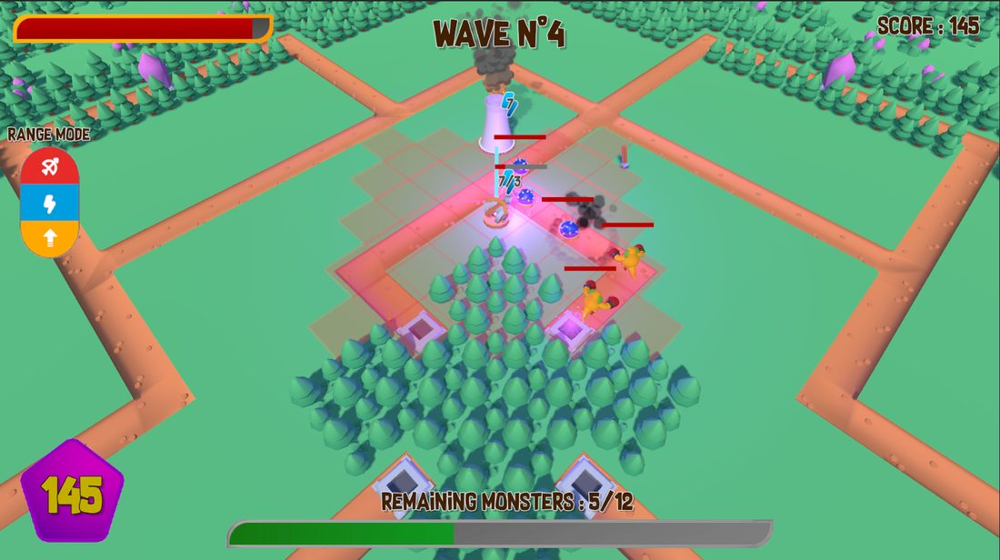
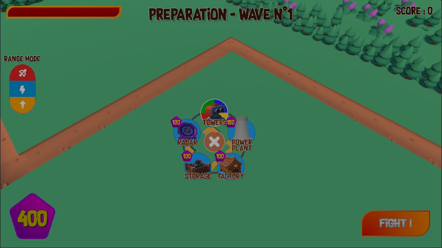
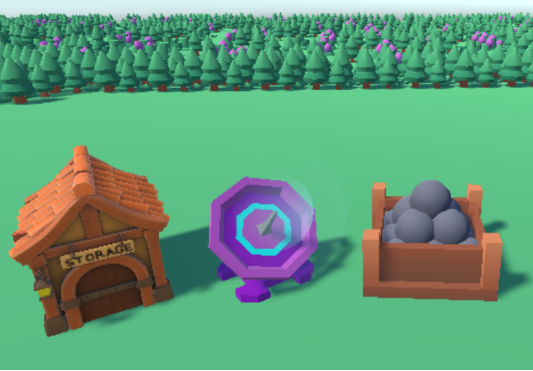

Jeu 3D · Unity
Tower Defense Jeu de défense de tours 3D sous Unity 6
- Période
- déc. 2025 – janv. 2026 · cours CSC 4253
- Équipe
- avec Antonin Fruchet et Julien Wang
- Outils
- Unity 6, C#
Jeu de défense de tours en 3D, style cartoon, réalisé pour le cours d'architecture des moteurs de jeux. Des vagues de monstres traversent la carte vers vos cristaux : il faut placer et alimenter en énergie des tours, les renforcer avec des installations de soutien et gérer son argent. Les monstres choisissent leur chemin avec l'algorithme de Dijkstra, et les cartes sont des images PNG lues pixel par pixel, vérifiées avant d'être proposées.
Ma contribution
- Installations de soutien (Radar, Factory, Storage) : bonus de portée, de puissance et de cadence par zone d'effet, réglables dans l'inspecteur Unity
- Boucle économique : achat, revente, récompenses déclenchées par la mort des monstres, affichage de l'argent et des coûts dans le HUD
- Zoom à la molette, sauvegarde de la résolution, effets sonores des monstres, particules du Radar
Limites que j'identifie
- Les projectiles basés sur des Rigidbody ratent souvent leur cible
- L'équilibrage de l'économie est peu poussé
- Des ralentissements apparaissent avec beaucoup d'objets en scène


